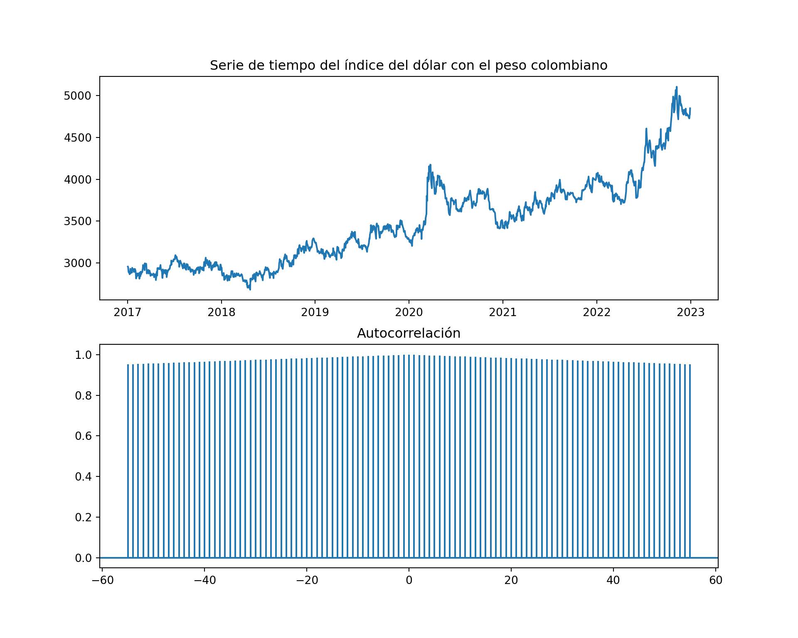

Capitulo 9 Paso 1: Identificación - Gráficos de autocorrelación y autocorrelación parcial
from statsmodels.tsa.arima.model import ARIMA
import matplotlib.pyplot as plt
fig, ax = plt.subplots(2, 1, figsize=(10, 8))
ax[0].plot(data["Close"])
ax[0].set_title('Serie de tiempo del índice del dólar con el peso colombiano')
ax[1].acorr(data["Close"], maxlags=1000)## (array([-1000, -999, -998, ..., 998, 999, 1000]), array([0.34378464, 0.34440223, 0.34501769, ..., 0.34501769, 0.34440223,
## 0.34378464]), <matplotlib.collections.LineCollection object at 0x000001CB599A1610>, <matplotlib.lines.Line2D object at 0x000001CB599A1940>)ax[1].set_title('Autocorrelación')
fig